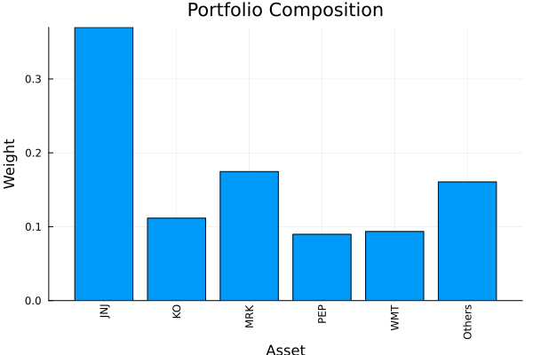
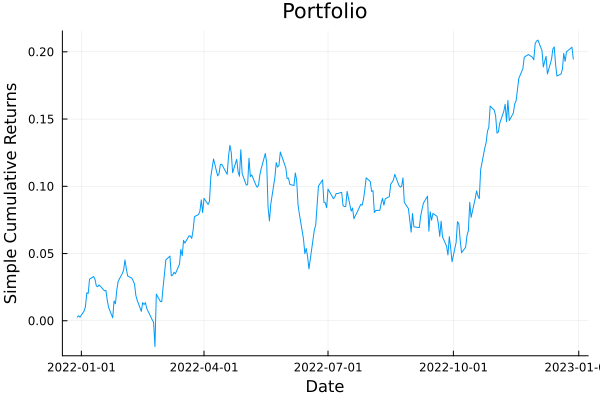
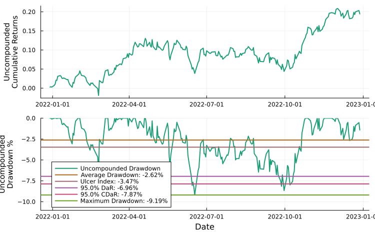
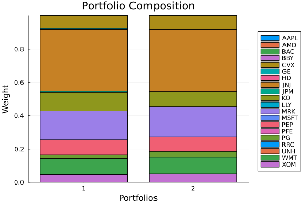

The source files can be found in examples/.
Getting started: a simple MeanRisk optimisation
Here we show a simple example of how to use PortfolioOptimisers. We will perform the classic Markowitz optimisation.
using PortfolioOptimisersPrettyTables is used to format the example output.
using PrettyTables# Format for pretty tables.tsfmt = (v, i, j) -> begin if j == 1 return Date(v) else return v endend;resfmt = (v, i, j) -> begin if j == 1 return v else return isa(v, Number) ? "$(round(v*100, digits=3)) %" : v endend;mipresfmt = (v, i, j) -> begin if j ∈ (1, 2, 3) return v else return isa(v, Number) ? "$(round(v*100, digits=3)) %" : v endend;1. Load the data
Import the S&P500 data from a compressed .csv file. We will only use the last 253 observations.
using CSV, TimeSeries, DataFramesX = TimeArray(CSV.File(joinpath(@__DIR__, "..", "SP500.csv.gz")); timestamp = :Date)[(end - 252):end]pretty_table(X[(end - 5):end]; formatters = [tsfmt])┌────────────┬─────────┬─────────┬─────────┬─────────┬─────────┬─────────┬─────────┬─────────┬─────────┬─────────┬─────────┬─────────┬─────────┬─────────┬─────────┬─────────┬─────────┬─────────┬─────────┬─────────┐
│ timestamp │ AAPL │ AMD │ BAC │ BBY │ CVX │ GE │ HD │ JNJ │ JPM │ KO │ LLY │ MRK │ MSFT │ PEP │ PFE │ PG │ RRC │ UNH │ WMT │ XOM │
│ Date │ Float64 │ Float64 │ Float64 │ Float64 │ Float64 │ Float64 │ Float64 │ Float64 │ Float64 │ Float64 │ Float64 │ Float64 │ Float64 │ Float64 │ Float64 │ Float64 │ Float64 │ Float64 │ Float64 │ Float64 │
├────────────┼─────────┼─────────┼─────────┼─────────┼─────────┼─────────┼─────────┼─────────┼─────────┼─────────┼─────────┼─────────┼─────────┼─────────┼─────────┼─────────┼─────────┼─────────┼─────────┼─────────┤
│ 2022-12-20 │ 131.916 │ 65.05 │ 31.729 │ 77.371 │ 169.497 │ 62.604 │ 310.342 │ 173.109 │ 127.844 │ 61.841 │ 357.55 │ 108.229 │ 240.67 │ 178.765 │ 49.754 │ 147.661 │ 25.65 │ 516.245 │ 142.919 │ 104.964 │
│ 2022-12-21 │ 135.057 │ 67.68 │ 32.212 │ 78.729 │ 171.49 │ 64.67 │ 314.798 │ 175.09 │ 129.282 │ 62.836 │ 365.872 │ 109.611 │ 243.287 │ 180.017 │ 50.084 │ 149.015 │ 26.574 │ 523.519 │ 144.04 │ 106.312 │
│ 2022-12-22 │ 131.846 │ 63.86 │ 31.927 │ 78.563 │ 168.918 │ 63.727 │ 311.604 │ 174.45 │ 127.814 │ 62.383 │ 363.187 │ 109.739 │ 237.077 │ 178.627 │ 50.065 │ 149.359 │ 25.232 │ 523.072 │ 142.354 │ 104.168 │
│ 2022-12-23 │ 131.477 │ 64.52 │ 32.005 │ 79.432 │ 174.14 │ 63.742 │ 314.177 │ 174.893 │ 128.421 │ 62.855 │ 365.762 │ 110.35 │ 237.614 │ 179.781 │ 50.249 │ 149.781 │ 26.226 │ 527.26 │ 142.641 │ 106.922 │
│ 2022-12-27 │ 129.652 │ 63.27 │ 32.065 │ 79.93 │ 176.329 │ 64.561 │ 314.985 │ 174.844 │ 128.871 │ 63.24 │ 362.76 │ 110.607 │ 235.852 │ 180.58 │ 49.57 │ 151.086 │ 26.375 │ 527.935 │ 142.681 │ 108.408 │
│ 2022-12-28 │ 125.674 │ 62.57 │ 32.301 │ 78.279 │ 173.728 │ 63.883 │ 311.22 │ 174.085 │ 129.575 │ 62.609 │ 363.098 │ 109.581 │ 233.434 │ 179.278 │ 49.25 │ 149.133 │ 24.497 │ 524.422 │ 140.181 │ 106.627 │
└────────────┴─────────┴─────────┴─────────┴─────────┴─────────┴─────────┴─────────┴─────────┴─────────┴─────────┴─────────┴─────────┴─────────┴─────────┴─────────┴─────────┴─────────┴─────────┴─────────┴─────────┘First we must compute the returns from the prices. The ReturnsResult struct stores the asset names in nx, asset returns in X, and timestamps in ts. The other fields are used in other applications which we will not be showcasing here.
rd = prices_to_returns(X)ReturnsResult
nx ┼ 20-element Vector{String}
X ┼ 252×20 Matrix{Float64}
nf ┼ nothing
F ┼ nothing
nb ┼ nothing
B ┼ nothing
ts ┼ 252-element Vector{Date}
iv ┼ nothing
ivpa ┼ nothing
pnl ┼ AssetPanel
│ pf ┼ Vector{AbstractPanelField}: AbstractPanelField[]
│ amsk ┼ 252×20 AllTrueMask
│ emsk ┴ 252×20 AllTrueMask
2. MeanRisk optimisation
2.1 Creating a solver instance
All optimisations require some prior statistics to be computed. This can either be done before the optimisation function, or within it. For certain optimisations, precomputing the prior is more efficient, but it makes no difference here so we'll do it within the optimisation.
The MeanRisk estimator defines a mean-risk optimisation problem. It is a JuMPOptimisationEstimator, which means it requires a JuMP-compatible optimiser, which in this case will be Clarabel.
using ClarabelWe have to define a Solver object, which contains the optimiser we wish to use, an optional name for logging purposes, optional solver settings, and optional kwargs for JuMP.assert_is_solved_and_feasible.
Given the vast range of optimisation options and types, it is often useful to try different solver and settings combinations. To this aim, it is also possible to provide a vector of Solver objects, which is iterated over until one succeeds or all fail. The classic Markowitz optimisation is rather simple, so we will use a single solver instance.
slv = Solver(; name = :clarabel1, solver = Clarabel.Optimizer, settings = Dict("verbose" => false), check_sol = (; allow_local = true, allow_almost = true))Solver
name ┼ Symbol: :clarabel1
solver ┼ UnionAll: Clarabel.MOIwrapper.Optimizer
settings ┼ Dict{String, Bool}: Dict{String, Bool}("verbose" => 0)
check_sol ┼ @NamedTuple{allow_local::Bool, allow_almost::Bool}: (allow_local = true, allow_almost = true)
add_bridges ┴ Bool: true
2.2 Defining the optimisation estimator
PortfolioOptimisers is designed to heavily leverage composition. The first hint of this design ethos in the examples comes in the form of JuMPOptimiser, which is the structure defining the optimiser parameters used in all JuMPOptimisationEstimators.
Let's create a MeanRisk estimator. As you can see from the output, JuMPOptimiser and MeanRisk contain myriad properties that we will not showcase in this example.
mr = MeanRisk(; opt = JuMPOptimiser(; slv = slv))MeanRisk
opt ┼ JuMPOptimiser
│ pe ┼ EmpiricalPrior
│ │ ce ┼ PortfolioOptimisersCovariance
│ │ │ ce ┼ Covariance
│ │ │ │ me ┼ SimpleExpectedReturns
│ │ │ │ │ w ┴ nothing
│ │ │ │ ce ┼ GeneralCovariance
│ │ │ │ │ ce ┼ SimpleCovariance: SimpleCovariance(true)
│ │ │ │ │ w ┴ nothing
│ │ │ │ alg ┼ FullMoment()
│ │ │ │ w ┴ nothing
│ │ │ mp ┼ MatrixProcessing
│ │ │ │ pdm ┼ Posdef
│ │ │ │ │ alg ┼ UnionAll: NearestCorrelationMatrix.Newton
│ │ │ │ │ kwargs ┴ @NamedTuple{}: NamedTuple()
│ │ │ │ dn ┼ nothing
│ │ │ │ dt ┼ nothing
│ │ │ │ alg ┼ nothing
│ │ │ │ order ┴ NTuple{4, Symbol}: (:pdm, :dn, :dt, :alg)
│ │ me ┼ SimpleExpectedReturns
│ │ │ w ┴ nothing
│ │ horizon ┼ nothing
│ │ fill_limit ┴ nothing
│ slv ┼ Solver
│ │ name ┼ Symbol: :clarabel1
│ │ solver ┼ UnionAll: Clarabel.MOIwrapper.Optimizer
│ │ settings ┼ Dict{String, Bool}: Dict{String, Bool}("verbose" => 0)
│ │ check_sol ┼ @NamedTuple{allow_local::Bool, allow_almost::Bool}: (allow_local = true, allow_almost = true)
│ │ add_bridges ┴ Bool: true
│ wb ┼ WeightBounds
│ │ lb ┼ Float64: 0.0
│ │ ub ┴ Float64: 1.0
│ bgt ┼ Float64: 1.0
│ sbgt ┼ nothing
│ gbgt ┼ nothing
│ xbgt ┼ Bool: false
│ lt ┼ nothing
│ st ┼ nothing
│ lcse ┼ nothing
│ cte ┼ nothing
│ gcarde ┼ nothing
│ sgcarde ┼ nothing
│ smtx ┼ nothing
│ sgmtx ┼ nothing
│ slt ┼ nothing
│ sst ┼ nothing
│ sglt ┼ nothing
│ sgst ┼ nothing
│ tn ┼ nothing
│ fees ┼ nothing
│ sets ┼ nothing
│ tr ┼ nothing
│ ple ┼ nothing
│ ret ┼ ArithmeticReturn
│ │ settings ┼ JuMPReturnsSettings
│ │ │ scale ┼ Float64: 1.0
│ │ │ lb ┼ nothing
│ │ │ rte ┼ Bool: true
│ │ │ fee ┼ Bool: true
│ │ │ mic ┴ Bool: true
│ │ ucs ┼ nothing
│ │ mu ┴ nothing
│ sca ┼ SumScalariser()
│ ccnt ┼ nothing
│ cobj ┼ nothing
│ sc ┼ Int64: 1
│ so ┼ Int64: 1
│ ss ┼ nothing
│ card ┼ nothing
│ scard ┼ nothing
│ l2c ┼ nothing
│ lpc ┼ nothing
│ linfc ┼ nothing
│ l1 ┼ nothing
│ l2 ┼ nothing
│ lp ┼ nothing
│ linf ┼ nothing
│ brt ┼ Bool: false
│ x_src ┼ Symbol: :prior
│ strict ┴ Bool: false
r ┼ Variance
│ settings ┼ RiskMeasureSettings
│ │ scale ┼ Float64: 1.0
│ │ ub ┼ nothing
│ │ rke ┴ Bool: true
│ sigma ┼ nothing
│ chol ┼ nothing
│ rc ┼ nothing
│ alg ┴ SquaredSOCRiskExpr()
obj ┼ MinimumRisk()
wi ┼ nothing
fb ┴ nothing
2.3 Performing the optimisation
The optimise function is used to perform all optimisations in PortfolioOptimisers. Each method returns an AbstractResult object containing the optimisation results, which include a return code, a solution object, and relevant statistics (precomputed or otherwise) used in the optimisation.
The field retcode informs us that our optimisation was successful because it contains an OptimisationSuccess return code.
res = optimise(mr, rd)MeanRiskResult
jr ┼ JuMPOptimisationResult
│ pa ┼ ProcessedJuMPOptimiserAttributes
│ │ pr ┼ LowOrderPrior
│ │ │ X ┼ 252×20 Matrix{Float64}
│ │ │ o_X ┼ nothing
│ │ │ mu ┼ 20-element Vector{Float64}
│ │ │ sigma ┼ 20×20 Matrix{Float64}
│ │ │ chol ┼ nothing
│ │ │ w ┼ nothing
│ │ │ ens ┼ nothing
│ │ │ kld ┼ nothing
│ │ │ ow ┼ nothing
│ │ │ rr ┼ nothing
│ │ │ fpr ┴ nothing
│ │ wb ┼ WeightBounds
│ │ │ lb ┼ 20-element StepRangeLen{Float64, Base.TwicePrecision{Float64}, Base.TwicePrecision{Float64}, Int64}
│ │ │ ub ┴ 20-element StepRangeLen{Float64, Base.TwicePrecision{Float64}, Base.TwicePrecision{Float64}, Int64}
│ │ lt ┼ nothing
│ │ st ┼ nothing
│ │ lcsr ┼ nothing
│ │ ctr ┼ nothing
│ │ gcardr ┼ nothing
│ │ sgcardr ┼ nothing
│ │ smtx ┼ nothing
│ │ sgmtx ┼ nothing
│ │ slt ┼ nothing
│ │ sst ┼ nothing
│ │ sglt ┼ nothing
│ │ sgst ┼ nothing
│ │ tn ┼ nothing
│ │ fees ┼ nothing
│ │ plr ┼ nothing
│ │ ret ┼ ArithmeticReturn
│ │ │ settings ┼ JuMPReturnsSettings
│ │ │ │ scale ┼ Float64: 1.0
│ │ │ │ lb ┼ nothing
│ │ │ │ rte ┼ Bool: true
│ │ │ │ fee ┼ Bool: true
│ │ │ │ mic ┴ Bool: true
│ │ │ ucs ┼ nothing
│ │ │ mu ┴ 20-element Vector{Float64}
│ │ sca ┼ SumScalariser()
│ │ imsk ┴ nothing
│ retcode ┼ OptimisationSuccess
│ │ res ┴ Dict{Any, Any}: Dict{Any, Any}()
│ sol ┼ JuMPOptimisationSolution
│ │ w ┴ 20-element Vector{Float64}
│ model ┼ A JuMP Model
│ │ ├ solver: Clarabel
│ │ ├ objective_sense: MIN_SENSE
│ │ │ └ objective_function_type: QuadExpr
│ │ ├ num_variables: 21
│ │ ├ num_constraints: 4
│ │ │ ├ AffExpr in MOI.EqualTo{Float64}: 1
│ │ │ ├ Vector{AffExpr} in MOI.Nonnegatives: 1
│ │ │ ├ Vector{AffExpr} in MOI.Nonpositives: 1
│ │ │ └ Vector{AffExpr} in MOI.SecondOrderCone: 1
│ │ └ Names registered in the model
│ │ └ :G, :T, :bgt, :cdev_soc_1, :dev_1, :k, :lw, :obj_expr, :ret, :ret_1, :ret_vec, :risk, :risk_vec, :sc, :so, :variance_flag, :variance_risk_1, :w, :w_lb, :w_ub
r ┼ Variance
│ settings ┼ RiskMeasureSettings
│ │ scale ┼ Float64: 1.0
│ │ ub ┼ nothing
│ │ rke ┴ Bool: true
│ sigma ┼ 20×20 Matrix{Float64}
│ chol ┼ nothing
│ rc ┼ nothing
│ alg ┴ SquaredSOCRiskExpr()
fb ┴ nothing
Let's view the solution results as a pretty table. For convenience, we have ensured all AbstractResult have a property called w, which directly accesses sol.w. The optimisations don't shuffle the asset order, so we can simply view the asset names and weights side by side.
pretty_table(DataFrame(:assets => rd.nx, :weights => res.w); formatters = [resfmt])┌────────┬──────────┐
│ assets │ weights │
│ String │ Float64 │
├────────┼──────────┤
│ AAPL │ 0.0 % │
│ AMD │ 0.0 % │
│ BAC │ 0.0 % │
│ BBY │ 0.0 % │
│ CVX │ 7.432 % │
│ GE │ 0.806 % │
│ HD │ 0.0 % │
│ JNJ │ 36.974 % │
│ JPM │ 0.749 % │
│ KO │ 11.161 % │
│ LLY │ 0.0 % │
│ MRK │ 17.467 % │
│ MSFT │ 0.0 % │
│ PEP │ 8.978 % │
│ PFE │ 0.0 % │
│ PG │ 2.353 % │
│ RRC │ 0.0 % │
│ UNH │ 0.0 % │
│ WMT │ 9.355 % │
│ XOM │ 4.725 % │
└────────┴──────────┘3. Visualising the portfolio
We can visualise the composition, cumulative returns, return distribution, and drawdown profile of the optimal portfolio.
Portfolio weights as a bar chart.
using StatsPlots, GraphRecipesCumulative returns of the optimised portfolio over the sample period.
plot_composition(res, rd)
Return histogram with tail-risk markers (VaR, CVaR).
plot_portfolio_cumulative_returns(res, rd)
Drawdown time series showing peak-to-trough loss periods.
plot_histogram(res, rd)plot_drawdowns(res, rd)
4. Finite allocation
We have the optimal solution, but most people don't have access to effectively unlimited funds. Given the optimised weights, current prices and a finite cash amount, it is possible to perform a finite allocation. We will use a discrete allocation method which uses mixed-integer programming to find the best allocation. We have another finite allocation method which uses a greedy algorithm that can deal with fractional shares, but we will reserve it for a later example.
For the discrete allocation, we need a solver capable of handling mixed-integer programming problems, we will use HiGHS.
using HiGHSmip_slv = Solver(; name = :highs1, solver = HiGHS.Optimizer, settings = Dict("log_to_console" => false), check_sol = (; allow_local = true, allow_almost = true))da = DiscreteAllocation(; slv = mip_slv)DiscreteAllocation
slv ┼ Solver
│ name ┼ Symbol: :highs1
│ solver ┼ DataType: HiGHS.Optimizer
│ settings ┼ Dict{String, Bool}: Dict{String, Bool}("log_to_console" => 0)
│ check_sol ┼ @NamedTuple{allow_local::Bool, allow_almost::Bool}: (allow_local = true, allow_almost = true)
│ add_bridges ┴ Bool: true
sc ┼ Int64: 1
so ┼ Int64: 1
wf ┼ AbsoluteErrorWeightFinaliser()
fb ┼ GreedyAllocation
│ unit ┼ Int64: 1
│ args ┼ Tuple{}: ()
│ kwargs ┼ @NamedTuple{}: NamedTuple()
│ fb ┴ nothing
Luckily, we have the optimal weights, the latest prices are the last entry of our original time array X, and let's say we have 4206.9 USD to invest.
The inputs are bundled into a FiniteAllocationInput, which can optionally carry a time horizon and a variety of fees, but we will not use them here.
mip_res = optimise(da, FiniteAllocationInput(; w = res.w, prices = vec(values(X[end])), cash = 4206.9))DiscreteAllocationResult
retcode ┼ OptimisationSuccess
│ res ┴ nothing
s_retcode ┼ nothing
l_retcode ┼ OptimisationSuccess
│ res ┴ Dict{Any, Any}: Dict{Any, Any}()
shares ┼ 20-element SubArray{Float64, 1, Matrix{Float64}, Tuple{Base.Slice{Base.OneTo{Int64}}, Int64}, true}
cost ┼ 20-element SubArray{Float64, 1, Matrix{Float64}, Tuple{Base.Slice{Base.OneTo{Int64}}, Int64}, true}
w ┼ 20-element SubArray{Float64, 1, Matrix{Float64}, Tuple{Base.Slice{Base.OneTo{Int64}}, Int64}, true}
cash ┼ Float64: 8.471999999997934
fees ┼ Float64: 0.0
s_model ┼ nothing
l_model ┼ A JuMP Model
│ ├ solver: HiGHS
│ ├ objective_sense: MIN_SENSE
│ │ └ objective_function_type: AffExpr
│ ├ num_variables: 21
│ ├ num_constraints: 42
│ │ ├ AffExpr in MOI.GreaterThan{Float64}: 1
│ │ ├ Vector{AffExpr} in MOI.NormOneCone: 1
│ │ ├ VariableRef in MOI.GreaterThan{Float64}: 20
│ │ └ VariableRef in MOI.Integer: 20
│ └ Names registered in the model
│ └ :cabs_err, :cr, :fee, :r, :sc, :so, :u, :x
fb ┴ nothing
The result of this optimisation contains different pieces of information to the previous one. The reason various fields are prefixed by l_or s_ is because the discrete allocation method splits the assets into long and short positions, which are recombined in the final result.
Let's see the results in another pretty table.
pretty_table(DataFrame(:assets => rd.nx, :shares => mip_res.shares, :cost => mip_res.cost, :opt_weights => res.w, :mip_weights => mip_res.w); formatters = [mipresfmt])┌────────┬─────────┬─────────┬─────────────┬─────────────┐
│ assets │ shares │ cost │ opt_weights │ mip_weights │
│ String │ Float64 │ Float64 │ Float64 │ Float64 │
├────────┼─────────┼─────────┼─────────────┼─────────────┤
│ AAPL │ 0.0 │ 0.0 │ 0.0 % │ 0.0 % │
│ AMD │ 0.0 │ 0.0 │ 0.0 % │ 0.0 % │
│ BAC │ 0.0 │ 0.0 │ 0.0 % │ 0.0 % │
│ BBY │ 0.0 │ 0.0 │ 0.0 % │ 0.0 % │
│ CVX │ 2.0 │ 347.456 │ 7.432 % │ 8.276 % │
│ GE │ 0.0 │ 0.0 │ 0.806 % │ 0.0 % │
│ HD │ 0.0 │ 0.0 │ 0.0 % │ 0.0 % │
│ JNJ │ 9.0 │ 1566.77 │ 36.974 % │ 37.318 % │
│ JPM │ 0.0 │ 0.0 │ 0.749 % │ 0.0 % │
│ KO │ 6.0 │ 375.654 │ 11.161 % │ 8.947 % │
│ LLY │ 0.0 │ 0.0 │ 0.0 % │ 0.0 % │
│ MRK │ 7.0 │ 767.067 │ 17.467 % │ 18.27 % │
│ MSFT │ 0.0 │ 0.0 │ 0.0 % │ 0.0 % │
│ PEP │ 2.0 │ 358.556 │ 8.978 % │ 8.54 % │
│ PFE │ 0.0 │ 0.0 │ 0.0 % │ 0.0 % │
│ PG │ 1.0 │ 149.133 │ 2.353 % │ 3.552 % │
│ RRC │ 0.0 │ 0.0 │ 0.0 % │ 0.0 % │
│ UNH │ 0.0 │ 0.0 │ 0.0 % │ 0.0 % │
│ WMT │ 3.0 │ 420.543 │ 9.355 % │ 10.017 % │
│ XOM │ 2.0 │ 213.254 │ 4.725 % │ 5.079 % │
└────────┴─────────┴─────────┴─────────────┴─────────────┘We can see that the mip weights do not exactly match the optimal ones, but that is because we only have finite resources. Note that the sum of the costs minus the initial cash is equal to the cash property of the result. This changes when we introduce fees, which will be shown in a future example.
println("used cash ≈ available cash: $(isapprox(mip_res.cash, 4206.9 - sum(mip_res.cost)))")used cash ≈ available cash: trueWe can also see that the cost of each asset is equal to the number of shares times its price.
println("cost of shares ≈ cost of portfolio: $(all(isapprox.(mip_res.shares .* vec(values(X[end])), mip_res.cost)))")cost of shares ≈ cost of portfolio: trueWe can compare the optimal (continuous) and finite-allocation (MIP) compositions side by side. The MIP weights approximate the continuous ones, with small deviations due to rounding to whole shares.
plot_stacked_bar_composition([res, mip_res], rd)
This page was generated using Literate.jl.